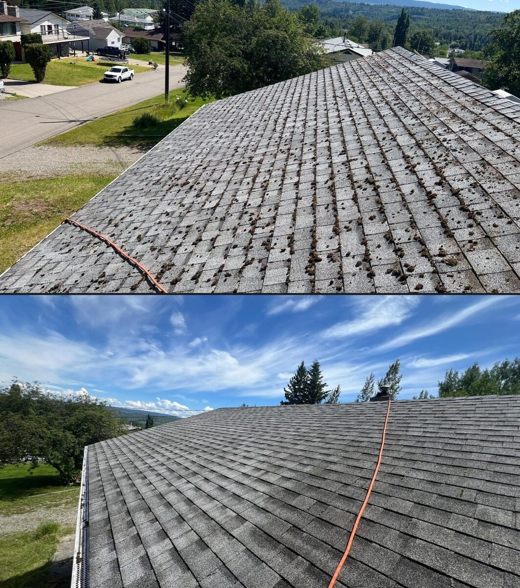
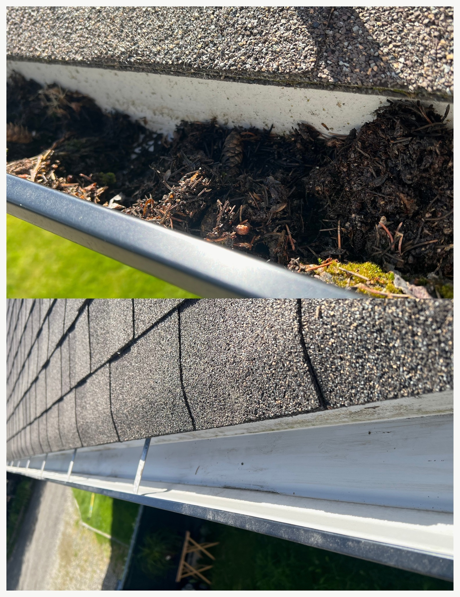
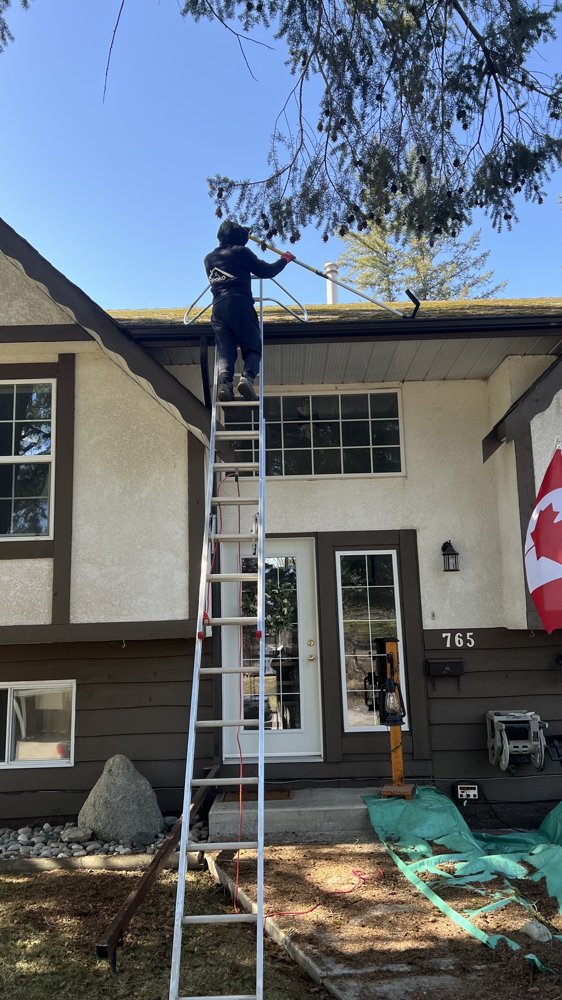

Before & After
See the difference proper gutter and roof cleaning makes.

Before → After

Before → After

Before → After

Before → After

In Progress
Clogged gutters and mossy roofs lead to water damage. We clean them properly so they drain the way they should.
Gutters in the Cariboo fill up fast — pine needles, leaves, dirt, moss, and whatever else blows off the trees. Left alone, they overflow, back up under shingles, and cause water damage to fascia and foundations. We clean them out completely, flush downspouts, and make sure everything drains properly.
We also do roof moss removal. Moss holds moisture against shingles and shortens the life of your roof. We remove it carefully without damaging the surface, and can treat it to slow regrowth.
All debris removed by hand, gutters flushed with water, downspouts checked and cleared.
Moss scraped and blown off without damaging shingles. Treatment available to prevent regrowth.
Blocked downspouts flushed and tested for proper drainage. Extensions repositioned if needed.
We check fascia boards for rot or damage while we're up there, and let you know if anything needs attention.
See the difference proper gutter and roof cleaning makes.


